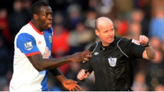

Tottenham are keen to bolster their defensive options by swooping for Blackburn captain Christopher Samba in the January transfer window, though they will have to work to prise him away from Ewood Park.

Samba, 27, is Rovers' prized asset but there has been speculation that club owners Venky's are keen to take his reported £60,000-a-week pay packet off the wage bill. Harry Redknapp is thought to be a big admirer of the Congo international and a source has told ESPNsoccernet that "Spurs are desperate to sign Samba", with an offer of £8 million believed to be on the cards. Samba is keen to test himself elsewhere and could provide extra defensive cover at White Hart Lane for the injury-prone Ledley King and 34-year-old William Gallas. QPR boss Neil Warnock has also been monitoring Samba's situation but the Rs are unable to match either the spending power or attraction of Spurs, who are also keeping tabs on West Ham's James Tomkins should they not be able to tempt Blackburn into selling. Blackburn boss Steve Kean - who himself is targeting Andy Johnson, Chris Gunter, Bradley Orr and Nedum Onouha in January - certainly has no desire to let Samba leave and views him as key to his side's chances of avoiding relegation this season. However, should the ambitious 6ft 4in centre-back want to go, Kean may feel he is better off cashing in and reinvesting any transfer fee elsewhere.